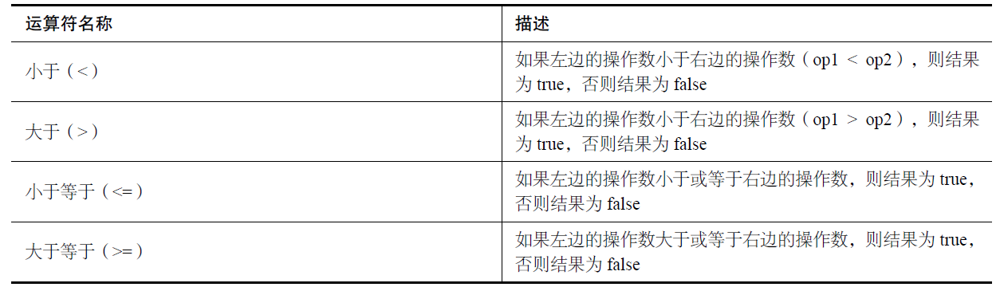
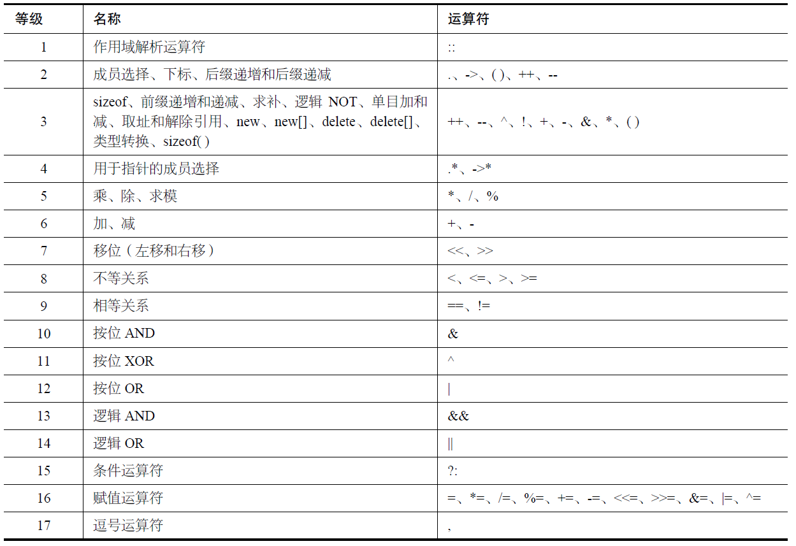

C++语法学习（一）
C++语法学习(一)
C++基础语法
1. 基本数据类型
1.1 算数类型
- 类型


- 可寻址的最小内存块成为“字节（byte）”，存储的基本单元成为“字（word）”，1 byte = 8 bit。
- 带符号类型（可以表示正数、负数或0）：int、short、long、long long。
- 无符号类型（仅能表示大于等于0的值）：（unsigned）int、long···。
字符型被分为了三种：char、signed char和unsigned char。
- 关键字
auto自动推断类型：使用 auto 时必须对变量进行初始化。
1.2 类型转换
- 当一个算术表达式中既有
无符号又有int值时，int值就会转换成无符号数。
2
3
4unsigned u = 10;
int i = -42;
std::cout << i + i << std::endl; // -84
std::cout << u + i << std::endl; // 4294967264
1.3 字面值常量
- 以0开头的整数代表八进制数，以0x或0X开头的代表十六进制数。
- 字符和字符串字面值：由单引号括起来的一个字符称为
char型字面值，双引号括起来的零个或多个字符则构成字符串字面值。
1 | |

以U为后缀的十进制数、八进制数或十六进制数都将从 unsigned int、unsigned long和unsigned long long 中选择能匹配的空间最小的一个作为其数据类型。
如果后缀中有L，则字面值的类型至少是long；
如果后缀中有LL，则字面值的类型将是long long 和 unsigned long long中的一种。
2. 常量
- 字面常量：字面常量可以是任何类型，布尔型、整型、字符串等。
- 关键字const将变量声明为常量。
- constexpr 定义常量表达式。
1 | |
- 关键字
enum声明枚举。枚举由一组称为枚举量（emumerator）的常量组成。
1 | |
- 使用
#define定义常量（使用#define 定义常量的做法已被摒弃，因此不应采用这种做法。） - 不能用作常量或变量名的关键字

3. 数组
- 声明和初始化静态数组
1 | |
- 动态数组
vector：vector<int> dynArray (3)。
4. 运算符
- 左值和右值：左值通常是内存单元，右值可以是内存单元的内容。
int daysInYear = 365，daysInYear（左值），365（右值） - 运算符
- 加法运算符（+）、减法运算符（−）、乘法运算符（*）、除法运算符（/）和求模运算符（%）
1 | |
- 递增运算符（++）和递减运算符（−−）
1 | |
使用后缀运算符时，先将右值赋给左值，再将右值递增或递减。这意味着在上述所有使用后缀运算符的代码中，num2 都为num1 的旧值（执行递增或递减前的值）。前缀运算符的行为完全相反，即先将右值递增或递减，再将结果赋给左值。在所有使用后缀运算符的代码中，num2 的值都与num1 的值相同。程序清单5.2 演示了将前缀和后缀递增和递减运算符用于一个int 变量的结果。
- 相等运算符（==）和不等运算符（!=）
1 | |
- 关系运算符

- 逻辑运算NOT、AND、OR 和XOR
| 运算符 | 操作数1 | 操作数1 | 结果 |
|---|---|---|---|
| NOT | false | true | |
| NOT | true | false | |
| AND | false | false | false |
| AND | true | false | false |
| AND | false | true | false |
| AND | true | true | true |
| OR | false | false | false |
| OR | true | false | true |
| OR | false | true | ture |
| OR | true | true | true |
| XOR | false | false | false |
| XOR | true | false | true |
| XOR | false | true | true |
| XOR | true | true | false |
- 按位运算符NOT（～）、AND（&）、OR（|）和XOR（^）
- 按位右移运算符（>>）和左移运算符（<<） 移位运算符将整个位序列向左或向右移动，其用途之一是将数据乘以或除以 \(2^n\)。
1 | |
- 运算符优先级

5. 流程控制语句
- 三目运算符：
(conditional expression evaluated to bool) ? expression1 if true : expression2 if false; - 基于范围的for 循环。
1 | |
6. 函数定义与调用
- 函数原型：返回值类型 函数名（函数参数（可选）：参数列表由参数类型和参数名组成，当有多个参数时，使用逗号分隔）
1 | |
- 如果函数声明中包含形参（parameter），调用函数时必须提供实参（argument），它们是函数的形参列表要求的值。
- 可以给多个参数指定默认值，但这些参数必须位于参数列表的末尾。
- 函数重载：名称和返回类型相同，但参数不同的函数被称为重载函数。
- 将数组传递给函数
1 | |
- 按引用传递参数：
void Area(double radius, double& result)。 - 内联函数：inline
1 | |
- 自动推断返回类型： 关键字
auto
1 | |
- lambda 函数：
[optional parameters](parameter list){ statements; }
1 | |
7. 指针
7.1指针
- 指针是存储内存地址的
变量。就像int 变量用于存储整数值一样，指针变量用于存储内存地址。
- 声明指针：通常将指针声明为指向特定的类型（int –> 整数，内存块 –> void）
1 | |
- 使用引用运算符（&）获取变量的地址，引用运算符（&）也叫地址运算符。
- 使用指针存储地址。
1 | |
- 使用解除引用运算符（*）访问指向的数据，解除引用运算符（*）也叫间接运算符。
- 指针大小：sizeof(*type)，不管指针指向的内存单元是1字节还是8字节，存储指针所需要的内存量都相同。
1 | |
7.2 动态内存分配
- 使用new动态地分配内存。
1 | |
- 使用delete动态地释放内存。
1 | |
- 不再使用分配的内存后，如果不释放它们，这些内存仍被预留并分配给您的应用程序。这将减少可供其他应用程序使用的系统内存量，甚至降低您的应用程序的执行速度。这被称为内存泄露，应不惜一切代价避免这种情况发生。
- 不能将运算符delete 用于任何包含地址的指针，而只能用于new 返回的且未使用delete释放的指针。
- 关键字const用于指针（const指针）
- 指针包含的地址是常量，不能修改，但可修改指针指向的数据
1 | |
- 指针指向的数据为常量，不能修改，但可以修改指针包含的地址，即指针可以指向其他地方
1 | |
- 指针包含的地址以及它指向的值都是常量，不能修改
1 | |
7.3 常见指针错误
- 内存泄露：使用
new动态分配的内存不再需要后，没有使用delete释放。 - 指针指向无效的内存单元：使用
*对指针解引用未指向有效内存单元。 - 悬浮指针：使用
delete释放指针后，任何有效指针都将无效，不应再使用。 - 检查使用new 发出的分配请求是否得到满足：1）使用异常，2）
8. 引用
- 引用是变量的别名。声明引用时，需要将其初始化为一个变量，因此引用只是另一种访问相应变量存储的数据的方式。
- 声明引用，使用引用运算符（&）。
VarType original = Value; VarType& ReferenceVariable = original;
C++语法学习（一）
http://seulqxq.top/posts/61084/